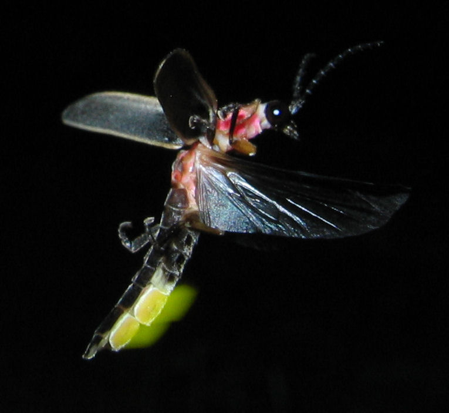

细胞的能量“货币”ATP
本期导读
结构 · 相互转化 · 能量来源与利用

视频原话 · 导读3 句
- 同学们好！这节课梳理人教版必修一第五章第二节——细胞的能量“货币”ATP。7.9s
- 高考常考ATP的结构、ATP与ADP的相互转化，以及吸能反应和放能反应。7.8s
- 我们按六个考点梳理，每个考点都讲清楚怎么考、怎么做。5.5s
ATP的结构01#
- ATP ＝ 腺苷三磷酸
- A ＝ 腺苷 ＝ 腺嘌呤 ＋ 核糖；P ＝ 磷酸基团
- 元素组成：C、H、O、N、P
易错
ATP 中的“A”是腺苷；DNA、RNA 中的“A”是腺嘌呤
视频原话4 句
- 考点一，ATP的结构。ATP是腺苷三磷酸的英文名称缩写，结构简式是A—P~P~P。10.0s
- 其中A代表腺苷，由腺嘌呤和核糖组成；P代表磷酸基团。6.4s
- ATP由C、H、O、N、P五种元素组成。5.0s
- 易错：ATP中的“A”是腺苷，而DNA和RNA中的“A”是腺嘌呤，两者不同。8.1s
特殊的化学键02#
- 磷酸基团带负电、相互排斥 → 化学键不稳定
- 末端磷酸基团有较高的转移势能
- 水解时远离 A 的特殊化学键易断裂
易错
1 个 ATP：2 个特殊化学键、3 个磷酸基团；水解一般只断末端那个
视频原话4 句
- 考点二，特殊的化学键。ATP中相邻磷酸基团之间的化学键是一种特殊的化学键，用“~”表示，一个ATP中有2个。12.0s
- 磷酸基团都带负电荷而相互排斥，使这种化学键不稳定，末端磷酸基团有较高的转移势能。8.9s
- ATP水解时，远离A的那个特殊化学键容易断裂，释放能量。6.1s
- 易错：一个ATP有2个特殊化学键、3个磷酸基团；水解时一般只断裂末端那一个。8.7s
ATP与ADP的转化03#
易错
不是可逆反应：两个方向的酶不同、能量来源和去路不同
视频原话4 句
- 考点三，ATP与ADP的相互转化。ATP在酶的作用下水解，远离A的特殊化学键断裂，形成ADP和Pi，释放能量。12.5s
- ADP在酶的作用下接受能量，与Pi结合，重新形成ATP。6.6s
- 这种转化时刻不停地发生，并且处于动态平衡之中。5.1s
- 易错：这种转化不是可逆反应，因为两个方向的酶不同、能量来源和去路不同。7.5s
合成ATP的能量来源04#
动物、人、真菌、多数细菌
能量来自细胞呼吸
场所：细胞质基质、线粒体
绿色植物
能量来自细胞呼吸和光合作用
场所：细胞质基质、线粒体、叶绿体
易错
叶绿体光反应产生的 ATP 主要用于暗反应，一般不用于其他生命活动
视频原话4 句
- 考点四，合成ATP的能量来源。对于动物、人、真菌和大多数细菌来说，能量来自细胞呼吸。9.9s
- 对于绿色植物来说，能量来自细胞呼吸和光合作用。5.3s
- 所以合成ATP的场所：动物细胞是细胞质基质和线粒体；植物细胞还有叶绿体。8.3s
- 易错：叶绿体光反应产生的ATP，主要用于暗反应，一般不用于细胞的其他生命活动。8.0s
吸能与放能反应05#
吸能反应 ↔ ATP 水解
由 ATP 水解提供能量
蛋白质合成、主动运输、肌肉收缩
放能反应 ↔ ATP 合成
释放的能量储存在 ATP 中
葡萄糖的氧化分解
能量通过 ATP 在两类反应之间流通 → ATP 是细胞的能量“货币”
解题方法
耗能的反应伴随 ATP 水解，放能的反应伴随 ATP 合成
视频原话4 句
- 考点五，ATP的利用。许多吸能反应与ATP水解相联系，比如蛋白质的合成、主动运输、肌肉收缩。10.5s
- 许多放能反应与ATP的合成相联系，释放的能量储存在ATP中，比如葡萄糖的氧化分解。8.9s
- 能量通过ATP分子在吸能反应和放能反应之间流通，所以ATP被称为细胞的能量“货币”。9.0s
- 解题方法：看反应耗能还是放能——耗能的伴随ATP水解，放能的伴随ATP合成。8.5s
易错辨析06#
- 1ATP 含量很少，但与 ADP 的转化非常迅速
- 2ATP 脱去两个磷酸基团 → 腺嘌呤核糖核苷酸（RNA 的单体之一）
- 3安静和运动时 ATP 含量都相对稳定，变的是转化速率
解题方法
“ATP 含量大量增加”“ATP 大量储存”——一般都是错的
视频原话4 句
- 考点六，易错辨析。ATP在细胞中含量很少，但与ADP的转化非常迅速。8.1s
- ATP脱去两个磷酸基团后，就是腺嘌呤核糖核苷酸，是组成RNA的基本单位之一。8.3s
- 安静和运动时，细胞中ATP的含量都相对稳定，变化的是ATP与ADP的转化速率。8.7s
- 解题方法：看到“ATP含量大量增加”“ATP大量储存”这类说法，一般是错的。7.4s
易错速查✓
先自己判断，再点按钮查看对错与解析。
- 1ATP中的A代表腺嘌呤说法错误：代表腺苷（腺嘌呤＋核糖）
- 2一个ATP分子中含有3个特殊的化学键说法错误：含有2个特殊的化学键
- 3ATP与ADP的相互转化是可逆反应说法错误：酶、能量和场所不同，不是可逆反应
- 4植物合成ATP的能量来自呼吸和光合作用说法正确。
- 5剧烈运动时细胞中ATP含量大量增加说法错误：含量相对稳定，转化速率加快
- 6ATP脱去两个磷酸基团后是RNA的单体之一说法正确。
含量少、转化快，吸能放能靠它连！
视频原话 · 易错速查5 句
- 最后，用六道判断题检验一下。3.6s
- 判断一？错，A代表腺苷。判断二？错，只有2个。6.9s
- 判断三？错，不是可逆反应。判断四？对。6.0s
- 判断五？错，ATP含量相对稳定。判断六？对。6.7s
- 六个考点串成一条线：ATP含量少、转化快，连接吸能反应和放能反应。我们下期再见！9.2s
图片来源
图片来源：Wikimedia Commons —— art farmer《Photinus pyralis Firefly glowing》CC BY-SA 2.0
Photo: art farmer, CC BY-SA 2.0